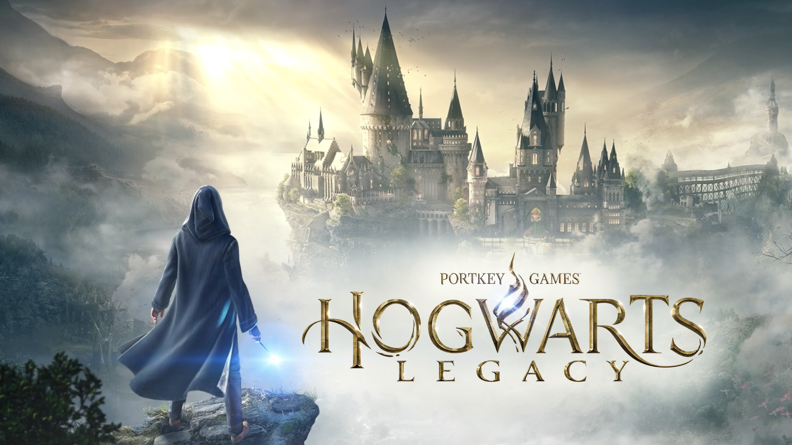
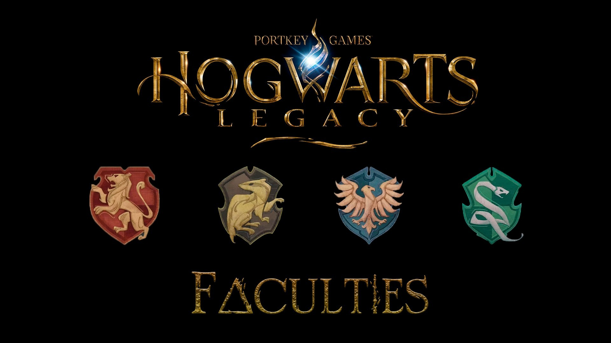
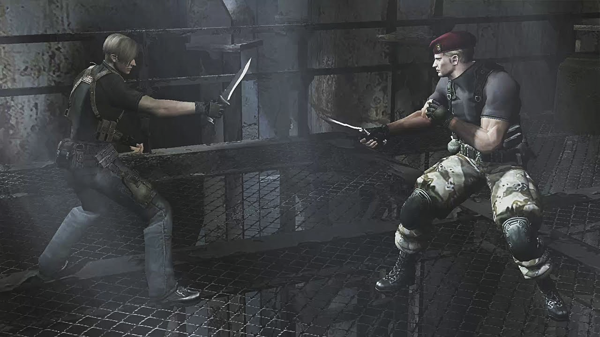
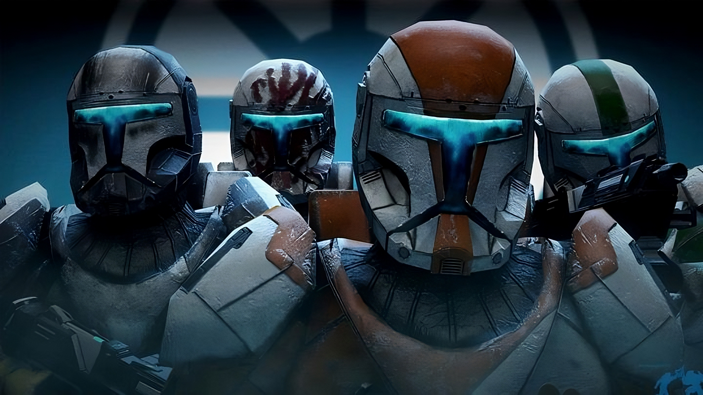
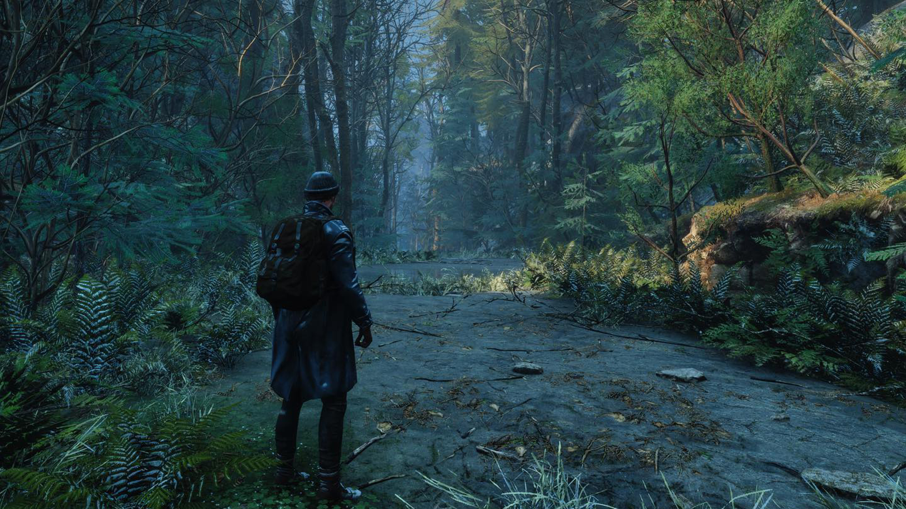

Hogwarts Legacy доминирует в чарте продаж Steam - игра по вселенной "Гарри Поттера" заняла первые четыре строчки
Согласно данным портала SteamDB, прямо сейчас в Hogwarts Legacy играют свыше 750 тысяч человек.
Слизерин стал самым популярным факультетом в Hogwarts Legacy
Как оказалось, самым популярным факультетом у игроков оказался... Слизерин! Факультет, который славится людьми с амбициями и хитростью
Ремейк Resident Evil 4 будет включать драку на ножах с Краузером, которая вдохновила новую систему парирования
В Resident Evil 4 появится новая механика
Вышло обновление 1.6 для фан-ремастера Star Wars Republic Commando
Появилась новая версия фанатского проекта Star Wars Republic Commando: Remaster, модификации, освежающей классический шутер 2005 года
Вышел новый тизер атмосферного экшена Nobody's Left, который черпает вдохновение с серии The Last of Us
Небольшая инди-студия Mad Rain, представила новый тизер захватывающего экшена Nobody's Left.